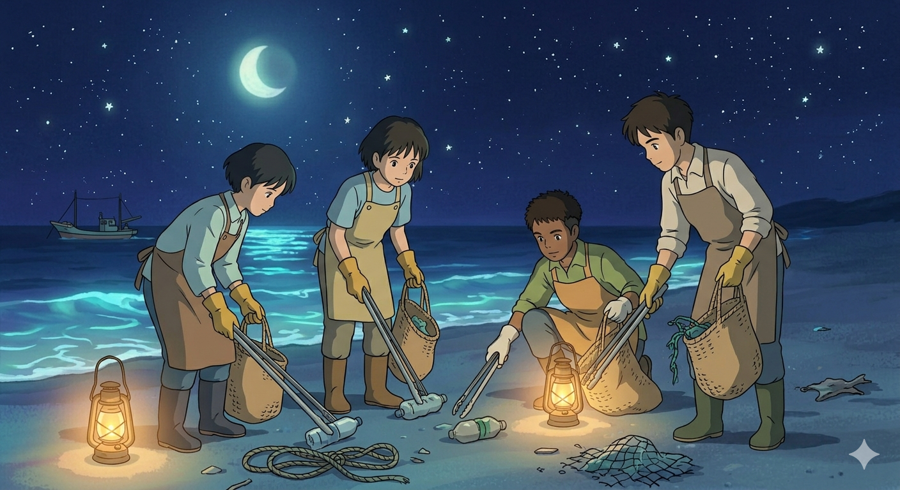
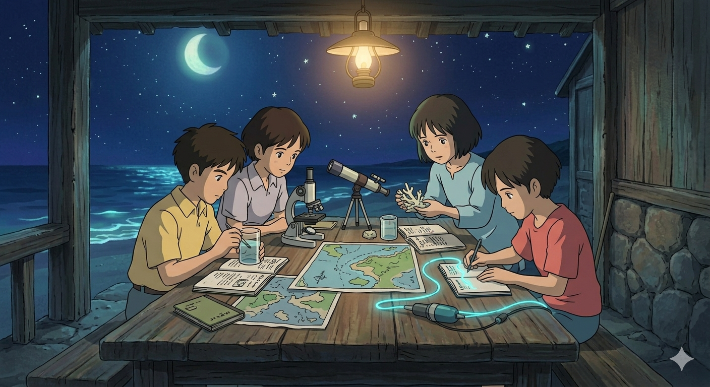
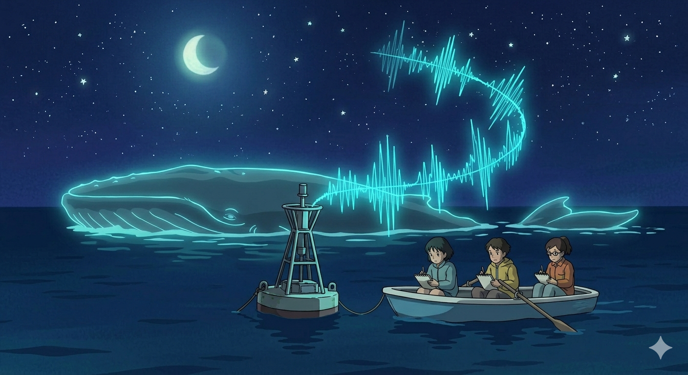
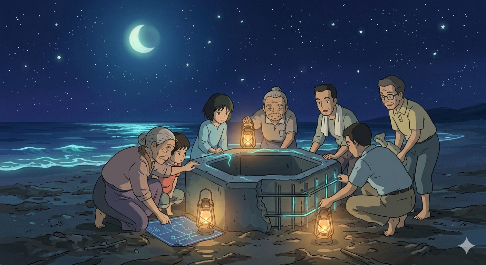

Your Words.
Our Mission.
Explore programs, read community voices,
and share your own experience with the deep.

Volunteer
Answering the ocean is call starts with direct action. From moonlit beach cleanups that remove "ghost" plastic to citizen science projects tracking reef health, volunteers act as the first line of defense. By rescuing wildlife or managing invasive species, you move beyond just listening to the warnings and become a physical force for restoration.

Student Actions
Students represent the intellectual spark needed to decode the ocean’s complex echoes. By leading campus plastic-free initiatives and conducting localized research, young advocates turn passion into documented evidence. These actions prove that the next generation is ready to rewrite the future of our waters through creative science and organized clubs.

Campaigns
Campaigns serve as a megaphone for the ocean is silent messages, turning individual concern into collective power. By advocating for plastic bans and marine protected areas, we ensure these warnings reach policymakers. Whether through public education or promoting sustainable seafood, these initiatives ensure the sea is voice is no longer ignored.

Community
Community projects are the heartbeat of long-term healing, blending local tradition with environmental science. By restoring vital mangrove "cradles" and seagrass meadows, coastal communities build natural shields against warming tides. These collaborative efforts prove that when we listen to the ocean together, we can create a sustainable harmony between people and the sea.
A Night I Will Never Forget
Participating in the Shoreline Cleanup was eye-opening. We worked under the moonlight, and seeing the sheer amount of ghost nets we recovered was sobering. You don't realize how much damage is hidden in the dark until you start pulling it out. I left feeling like I finally understood what the ocean has been trying to tell us. See more.
Translating the Silence
As a student, I joined the Acoustic Mapping project. It was haunting to see the sound visualizations of ship engines drowning out the whale calls on our monitors. It turned a massive, abstract problem into something I could actually see and document. This program is essential for anyone who wants to use science for real change. See more.
Community at the Core
I helped with the Coastal Breakwater build last month. What struck me was the intergenerational effort—having the elders show us traditional ways to protect the shore while we integrated new reef technology. It felt less like a 'chore' and more like we were building a future for our village and the sea. See more.
Empowered to Act
The 'Whale is Warning' campaign gave me a platform I didn't know I had. Sharing the data we collected about noise pollution with local policymakers was intimidating at first, but seeing them actually listen because we had the evidence was incredibly empowering. We aren't just 'listening' anymore; we're speaking up. See more.
Seeing the Light
Volunteering for the Coral Restoration project was a beautiful experience. Planting those glowing cyan coral fragments onto the grey, bleached areas felt like we were literally bringing the color back to life. It is hard work, but the sense of fulfillment when you see the reef start to pulse again is indescribable. See more.
More Than Just a Program
I joined the 'Echoes' initiative looking for a way to help, but I found a family. The staff at the research station are so supportive and the atmosphere—working by the sea at night—is magical. It is the best way to gain hands-on experience while actually doing something about the SDG Life Underwater goals. See more.